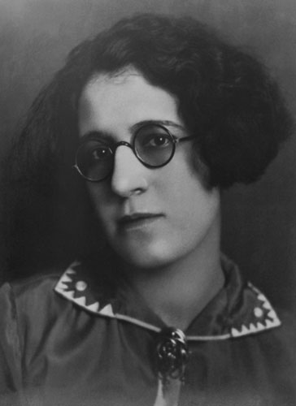
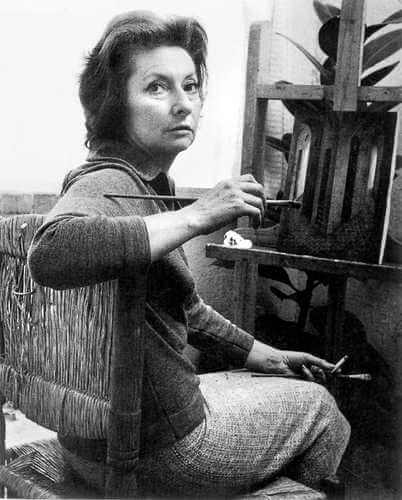

En México desde siglos pasados, a las mujeres se les asigno por genero el lugar de lo privado y lo domestico, por ello, tenían menos participación en las decisiones sociales, políticas y económicas, inclusive si participaban en lo público, sus actividades artísticas eran menos reconocidas. Sin embargo, poco a poco comenzaron a ganar terreno en estos espacio, principalmente a lo largo de todo el Siglo XX. A fines del Siglo XIX en el área de las artes, en la Escuela de Pintura al Aire Libre y en la Academia de San Carlos (recinto dedicado a la enseñanza de la arquitectura, pintura, escultura y grabados) ya había alumnas, sin embargo, las pintoras mexicanas se enfrentaron a la dificultad de conformar una carrera artística independiente y reconocida. “Frida Kahlo y María Izquierdo se cuentas como las primeras artistas que rompieron las restricciones impuestas por una sociedad machista, donde las actividades de la mujer estaban tradicionalmente confinadas a los roles de esposa, madre y ama de casa” (Gómez, 2000:1).
A partir de este momento, artistas mexicanas y extranjeras que llegaron a México, algunas fueron Remedios Varo, Alice Rahon y Angelina Beloff. Ellas fueron abriendo paso a lo largo del mundo de la pintura. Incursionando en corrientes como el Surrealismo, Costumbrismo y Abstracción Lírica, entre otras. Algunas de ellas: Rosario Cabrera, Rosa Rolanda, Olga Acosta, Leonora Carrington, Lola Cueto, Cordelia Urueta, Celia Calderón, Lilia Carillo, entre otras.
Ciudad de México, 1930-1974
Asistió a la Escuela de Pintura, Escultura y Grabado “La Esmeralda”, y obtuvo el titulo de Maestra en Artes Plástica en 1951. En 1953, viajo becada a Paris, donde fue influenciada por las vanguardias internaciones como el Cubismo, el Surrealismo, el Expresionismo Abstracto y el Informalismo. Su obra se expuso en Washington, Nueva York, Lima, Sao Paulo, Madrid, Barcelona, Bogotá y Cuba.
Ciudad de México, 1897-1978

A la edad de 12 años entro a la Academia de San Carlos. Cuatro años después, ya daba clases de pintura en una escuela para obreros. Los problemas causados por la Revolución Mexicana truncaron el desarrollo de Lola Cueto en la academia mexicana, no obstante, cuando estuvo en Paris desarrollo la técnica de tapicería y los títeres. Por ello, hizo su primera exposición. En 1932 cuando regreso a México, regreso a la Academia de San Carlos para estudiar grabado y formo parte de la comunidad intelectual de la época, donde también estaba Lupe Marín, Nahui Ollin, Diego Rivera, Dr. Atl, entre otras personalidades.
Ciudad de México, 1921-1969
Es conocida por su obra gráfica, aunque también fue destacada pintora y acuarelista. Estudio en la Escuela Nacional de Artes Plásticas. Su técnica le hizo ganar un lugar como maestra en la Academia a partir de 1946. Obtuvo una beca en el Consejo Británico donde aprendió arte grafico en la Slade Art School de Londres. Expuso en el antiguo Pekín, ahora Beijing. Su técnica preferida fue la de Grabado y Litografía, y por ello, fue invitada a la Sociedad Mexicana de Grabadores en 1947 y al Taller de Grafica Popular en 1952.
España 1908 – México 1963

En 1924 ingreso a la Academia de San Fernando de Madrid donde fue una de las primeras mujeres estudiantes. Formo parte del grupo “Lógicofobista” que intentaba la representación externa de los estados internos del alma. Viajo a Venezuela donde trabajo en publicidad y para el Instituto de Malariología venezolano donde realizo dibujos detallados de mosquitos. En 1955 presento su primera exposición colectiva en la galería diana. Al año siguiente, expuso por primera vez de manera individual.
Gómez, Germaine. (2000). Historia de Mujeres Artistas en México del Siglo XX. Recuperado de http://www.museodemujeres.com/images/biblioteca/historia_de_mujeres.pdf (consultado en febrero 2020).